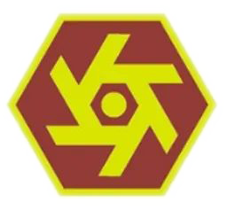
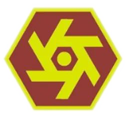

Bachelor of Science in Industrial Technology
The Bachelor of Science in Industrial Technology (BSInTech) program is a four-year degree program that prepares learners for supervisory and managerial positions in industries or as shop proprietors or managers in civil and drafting technology, computer technology, electrical technology, electronics technology, food processing, and service management, and garments technology. The BSInTech is a ladder-type program, this provides the student two exit points: first exit point is at the end of the midyear term of the second year and a learner is awarded the title “Certificate of Technology”; second exit point is at the end of the midyear term of the third year and the learner is awarded the title “Diploma of Technology”. The program is industry-oriented requiring learners to undergo intensive on-the-job training (OJT) in industries to provide the relevant training and exposure in modern industrial machinery and processes. The curriculum was studied and developed as per the suggestions of the industry partners of the college as well as a thorough study of the K+12 program. Stakeholders, which include TESDA, students, and industry partners were also involved in the development of the curriculum.
Historical Background of CIT
The College of Industrial Technology (CIT) was formerly the college department of the Ilocos Norte College of Arts and Trades (INCAT) in Laoag City which was integrated into the university by P.D. 1279 or the decree creating the Mariano Marcos State University. Upon its integration into the University, the College was originally named the Institute of Industrial Technology (IIT). Engineering and business administration courses were offered in 1983 which paved the way for the renaming of the college to the Institute of Technology (IT). The three-year non-degree Diploma of Industrial Technology (DIT) program, which was later renamed the Diploma of Technology (DT), was offered in 1985. In 1986, the engineering courses were transferred to the Batac Campus with the creation of the College of Engineering, and the business administration courses towards the establishment of the College of Economics and Management (CEM), now the College of Business, Economics, and Accountancy (CBEA) also at the main campus. The College was renamed in 1995 to the College of Technology (COT). To focus on tertiary education, a reengineering of the DT and GRCO non-degree programs was instituted in June 2004, which resulted in the development of a ladderized curriculum towards the four-year BSIT program. The College was later renamed in 2004 to College of Industrial Technology (CIT) to reflect the college’s role of providing education and training in specific fields of industrial technology.